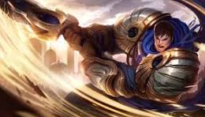

¿Porque me gustan los juegos?
Soy Brandon y League of Legends para mí va más allá de un simple juego; es una experiencia dinámica y estratégica que me atrapó desde el principio. La diversidad de campeones y la constante adaptación en cada partida hacen que cada momento sea único. Además de la emoción del juego, he desarrollado habilidades de trabajo en equipo, toma de decisiones rápida y manejo de la presión. Ya sea ganando o perdiendo, siempre encuentro oportunidades para mejorar, y disfruto cada momento como una forma de relajarme y sumergirme en un mundo lleno de desafíos y diversión.
